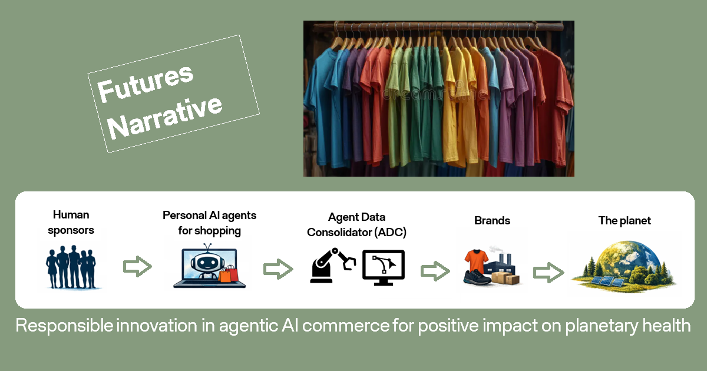

Podcast Show: The AI Chatbot Drag Race
An immersive podcast show in which six popular AI chatbots become drag queens and enter a competition modeled after RuPaul's Drag Race.
Futures Narrative: Application of Agentic AI
An interactive narrative on how agentic AI can strengthen demand planning in the apparel retail industry and improve planetary health.

A live presentation (15 mins) with accompanying slides is also available:
Essays
Metaphors in AI:
Examining the language used by mathematics professors
The paper analyzes 4 video interviews with distinguished professors of mathematics to capture the metaphors of anthropomorphic nature they use to describe AI and their views on the current ability of AI systems for mathematical reasoning and intelligence. 2300 words.
Anthropomorphism in AI:
Theory and illustration that human agency in AI does not exist
The paper visually summarizes the literature discourse on the traps for the human mind when AI is described in anthropomorphic language and then offers a logical illustration based on statistical principles to prove that AI does not possess human agency. 2200 words.
Personas in AI (part of the Podcast Show):
Interpretation and experimental design to test persona vectors
The paper offers an interpretative read on persona vectors, a concept recently introduced by researchers at Anthropic. It then outlines the experimental design structure for an "edutaintment test" of the theory by assigning drag queen personas to six popular AI chatbots. 2000 words.
Decoding AI Systems:
Sociotechnical analysis & Responsible AI grid for the Oura Ring
The paper offers an analytical review of the Oura Ring, a health wearable technology, which collects and analyzes key individual biometrics and uses a supervised machine learning algorithm and a rule-based scoring system to compute wellness scores for humans. 3500 words.